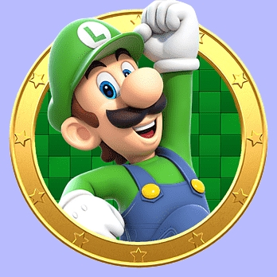
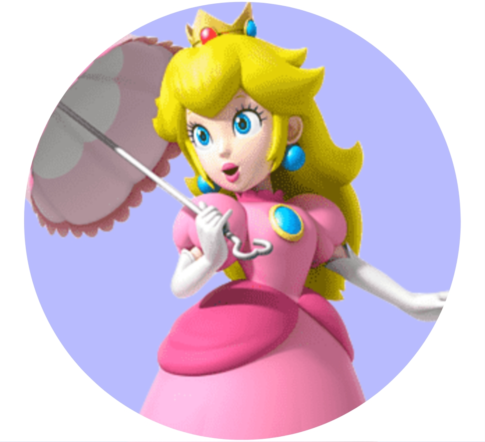

Un Mundo viejo
El juego que llego a quedarse
Mario Bros Ha sido sin duda uno de los mejores videojuegos que ha conquistado el mercado, porque su dinamica consiste en pasar los niveles de acuerdo a cada mundo en el que esté
Aqui conocerás como surgió Mario...
Esta versión de mario que fue lanzada en 1985, consta de 8 mundos con 4 niveles cada uno (Mostrándose como nivel 1-1, 1-2... 1-4, 2-1 y así sucesivamente). Cada nivel es diferente, al igual que su banda sonora. Hay cuatro estilos diferentes de mundos: el principal es el del Reino Champiñón, lleno de bloques de ladrillos o setas gigantes, y pueden ser tanto de día o de noche; niveles subterráneos, a los que se accede a través de tuberías; niveles acuáticos, los cuales deben ser cruzados nadando; y castillos, que son todos los cuartos niveles. Al final de los niveles 1, 2 ó 3 de cada mundo hay un asta en la cual Mario o Luigi deben izar una bandera para poder acceder al siguiente nivel.
¿Se acuerdan de esta versión de Mario?
¡¡¡Era muy genial!!!
Esta es la version de Super Mario World
Esta versión fue lanzada en el año 1991 y sus niveles cuentan con 7 áreas principales y 2 especiales, para poder completar el juego, debes encontrar las 96 salidas
La version de Mario Bros 3
Esta versión fue lanzada en el año 1990
En Mario Bros 3 cada mundo contaba con su propio mapa y el jugador en algunos casos tenía la posibilidad de escoger por dónde podía moverse e incluso de reunir ítems que ayudarían a abrir zonas nuevas y saltar algunos obstáculos para poder llegar al jefe final de cada mundo,
En esta nueva versión, adicionaron mas cosas, sumarían a su arsenal una hoja, que le daba una cola de mapache con la cual podía volar por los aires, un traje de rana para poder nadar con facilidad en los niveles acuáticos, un martillo que lo convertía en un Hammer Brother permitiéndole lanzar martillos con los que ningún enemigo seria rival y un traje de Tanuki que no solo le daría apariencia de mapache sino que además le permitía convertirse en piedra y poder esquivar algunos enemigos.
Mario Kart 64
Esta versión de Mario, fue lanzada en el año 1996. Es un videojuego de carreras protagonizado por personajes famosos de Nintendo del Universo Mario, en el cual se tiene que vencer las copas en las distintas cilindradas. Este juego contiene 16 circuitos de carreras y 4 escenarios de batalla
Uno o dos jugadores compiten contra los jugadores controlados por la CPU en grupo de 8 jugadores a través de los cuatro circuitos que contiene una copa. El jugador selecciona una de las cuatro copas que se pueden seleccionar eligiendo también el nivel de dificultad expresado en cilindradas (50, 100 o 150cc). Existe un modo llamado "Extra" que se consigue al vencer en todas las copas de máxima cilindrada que consiste en rodar los circuitos en modo espejo.
Aqui observarás como Mario Kart evolucionó en sus graficas para las distintas consolas
Mario y su evolución a traves del tiempo

Solo reproduce
Comentarios
-
Pamela
Awwww me llevo a la infancia -
Descoocido5
¡Estoy muy viejo! -
Fernando
¡Ese juego era uno de mis favoritos! -
Charles
Bro... que tiempos
Tags
Nintendo DonkeyKong Popeye MarioBros MarioWorld Zelda MarioKart SuperMario3
Personajes


Follow Me
Subscribe
Enter your e-mail below and get notified on the latest blog posts.